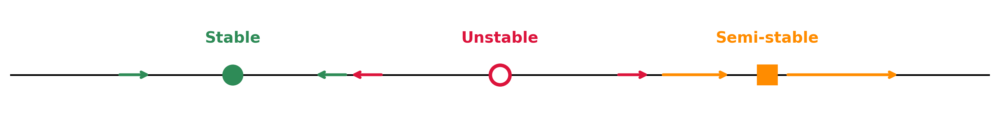
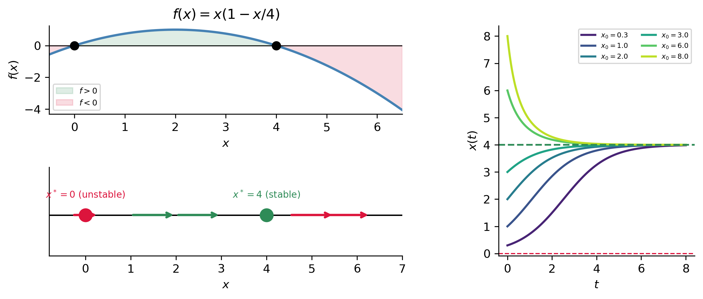
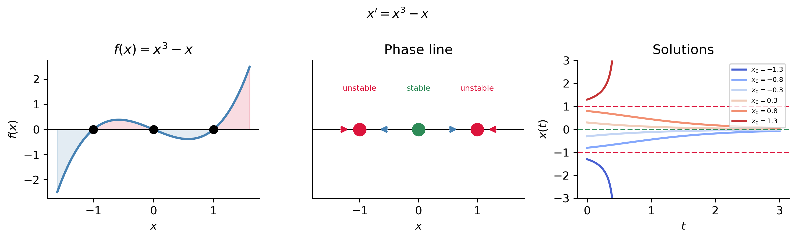
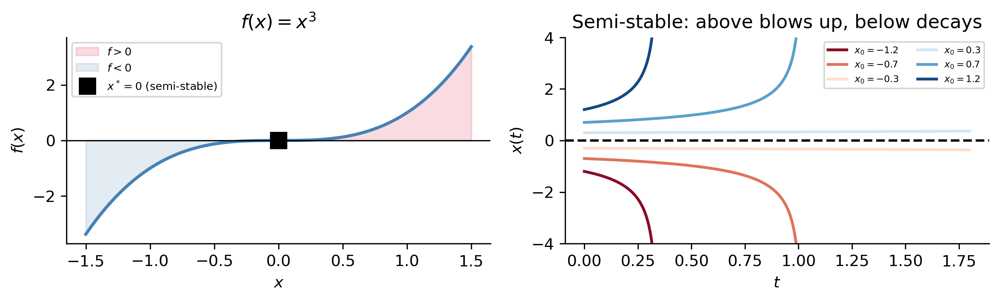
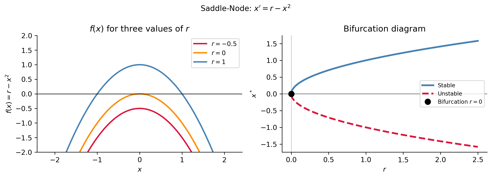
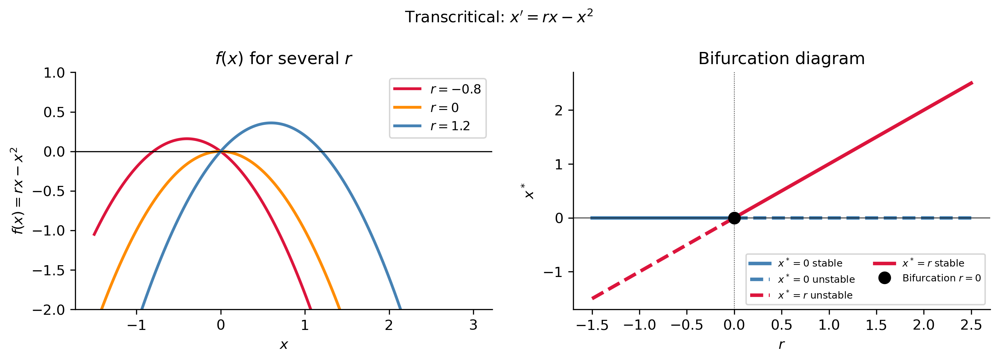
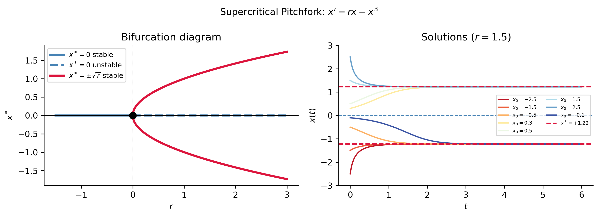
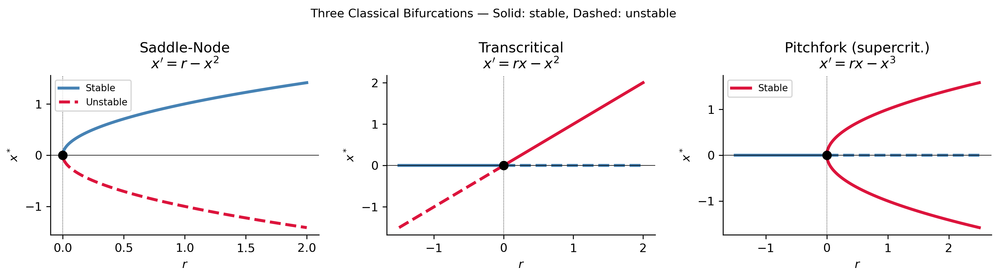
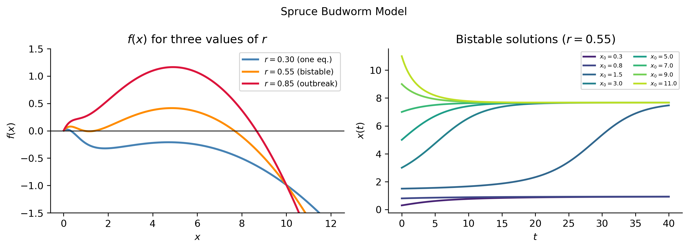

One-Dimensional Dynamical Systems
MATH 341 — Notes 3
Goals
What We Will Cover
Autonomous ODEs \(x'=f(x)\) as one-dimensional dynamical systems
Equilibrium solutions and stability via the phase line
Linearization — the algebraic stability criterion \(f'(x^*)\)
Bifurcations — qualitative changes in equilibrium structure
Bifurcation diagrams for the three classical cases
Note
Section 1.5 of Logan (2015).
Autonomous Equations
The Setup
An autonomous ODE has no explicit dependence on \(t\): \[x' = f(x).\]
The rate of change of \(x\) depends only on the current state \(x\), not on when that state occurs.
. . .
Key structural property. The slope field is constant along every horizontal line \(x = c\).
\[\text{slope} = f(x) \quad \longrightarrow \quad \text{same value for all } t\]
. . .
This means the entire qualitative story lives on the \(x\)-axis alone — we never need to solve the ODE to understand the long-term behavior.
Examples: population size, temperature, voltage, chemical concentration.
Equilibrium Solutions
ImportantDefinition
An equilibrium (steady state, fixed point) of \(x' = f(x)\) is a constant solution \(x(t) \equiv x^*\) satisfying \[f(x^*) = 0.\] Equilibria are the zeros of \(f\) — where the slope field is horizontal.
. . .
Geometric picture. In the \(tx\)-plane, an equilibrium is a horizontal line. On the phase line it is a single point.
| If \(f(x) > 0\) near \(x^*\) | If \(f(x) < 0\) near \(x^*\) |
|---|---|
| Solutions increase | Solutions decrease |
| Flow moves right \(\rightarrow\) | Flow moves left \(\leftarrow\) |
The Phase Line
ImportantAlgorithm: Constructing the Phase Line
- Solve \(f(x^*)=0\) — mark equilibria on the \(x\)-axis.
- Determine the sign of \(f(x)\) on each interval:
- \(f>0\): arrow points right \(\rightarrow\) (increasing)
- \(f<0\): arrow points left \(\leftarrow\) (decreasing)
- Draw flow arrows.
. . .
Reading stability from the phase line:
| Arrows | Equilibrium type |
|---|---|
| Both point toward \(x^*\) | Stable (asymptotically stable) |
| Both point away from \(x^*\) | Unstable |
| One toward, one away | Semi-stable |
Stability Definitions
ImportantStability
- Stable: solutions starting near \(x^*\) converge to \(x^*\) as \(t\to\infty\)
- Unstable: solutions starting near \(x^*\) move away from \(x^*\)
- Semi-stable: solutions approach from one side, diverge from the other
. . .
Phase Line Examples
Example 1 — Logistic Equation
\[x' = rx\!\left(1-\frac{x}{K}\right), \quad r=1,\; K=4\]
Equilibria: \(x^*=0\) and \(x^*=4\).
Sign analysis: \(f<0\) for \(x<0\); \(\;f>0\) for \(0<x<4\); \(\;f<0\) for \(x>4\).

Example 2 — Multiple Equilibria: \(x'=x^3-x\)
\[f(x)=x(x-1)(x+1), \quad \text{equilibria: } x^*=-1,\,0,\,1\]
| Equilibrium | \(f'(x^*)=3(x^*)^2-1\) | Stability |
|---|---|---|
| \(x^*=-1\) | \(+2>0\) | Unstable |
| \(x^*=0\) | \(-1<0\) | Stable |
| \(x^*=1\) | \(+2>0\) | Unstable |

Linearization
The Linearization Criterion
Write \(x(t) = x^* + u(t)\) where \(u\) is a small perturbation. Taylor-expand \(f\) about \(x^*\): \[u' = f(x^*+u) = \underbrace{f(x^*)}_{=0} + f'(x^*)\,u + O(u^2)\]
For small \(u\), drop the \(O(u^2)\) terms: \[\boxed{u' \approx f'(x^*)\,u \quad\Longrightarrow\quad u(t) = u(0)\,e^{f'(x^*)t}}\]
. . .
ImportantStability Criterion (Hyperbolic Equilibria)
| \(f'(x^*)\) | Behavior | Stability |
|---|---|---|
| \(< 0\) | \(e^{f'(x^*)t} \to 0\) | Asymptotically stable |
| \(> 0\) | \(e^{f'(x^*)t} \to \infty\) | Unstable |
| \(= 0\) | Test inconclusive | Need higher-order terms |
The quantity \(\lambda = f'(x^*)\) is the eigenvalue of the equilibrium.
Linearization: Two Examples
Logistic \(x'=rx(1-x/K)\), \(f'(x) = r(1-2x/K)\):
\[f'(0) = r > 0 \;\Rightarrow\; \text{unstable} \qquad f'(K) = -r < 0 \;\Rightarrow\; \text{stable} \checkmark\]
. . .
Cubic \(x'=x^3-x\), \(f'(x)=3x^2-1\):
\[f'(\pm 1) = 2 > 0 \;\Rightarrow\; \text{unstable} \qquad f'(0) = -1 < 0 \;\Rightarrow\; \text{stable} \checkmark\]
. . .
x_sym, r_sym, K_sym = sym.symbols('x r K', real=True, positive=True)
f_logistic = r_sym * x_sym * (1 - x_sym / K_sym)
fp = sym.diff(f_logistic, x_sym)
print("f'(x) =", fp)
print("f'(0) =", sym.simplify(fp.subs(x_sym, 0)))
print("f'(K) =", sym.simplify(fp.subs(x_sym, K_sym)))f'(x) = r*(1 - x/K) - r*x/K
f'(0) = r
f'(K) = -rNon-Hyperbolic Equilibrium: \(x'=x^2\)
At \(x^*=0\): \(f'(0)=0\) — test inconclusive. Must inspect \(f\) directly.
\(f(x)=x^2>0\) for all \(x\neq 0\) → arrows point toward zero from the left (solutions with \(x_0<0\) increase toward 0) and away from zero on the right (solutions with \(x_0>0\) increase away from 0) → semi-stable.

Bifurcations
What Is a Bifurcation?
In applications the ODE contains a parameter \(r\): \[x' = f(x;\,r)\]
As \(r\) varies, the equilibria may appear, disappear, or change stability.
ImportantDefinition
A value \(r=r_c\) is a bifurcation point if the number or stability of equilibria changes as \(r\) passes through \(r_c\).
. . .
Bifurcation diagram: plot \(x^*\) vs. \(r\)
- Solid curve = stable equilibria
- Dashed curve = unstable equilibria
- Dot = bifurcation point
. . .
Three classical bifurcations: saddle-node, transcritical, pitchfork.
Saddle-Node Bifurcation
Saddle-Node: \(x'=r-x^2\)
Equilibria: \(x^*=\pm\sqrt{r}\) (exist only for \(r\geq 0\)).
Linearization: \(f'(x)=-2x\)
| \(r\) | Equilibria | Stability |
|---|---|---|
| \(r<0\) | None | — |
| \(r=0\) | \(x^*=0\) | Semi-stable (bifurcation point) |
| \(r>0\) | \(x^*=+\sqrt{r}\) | Stable |
| \(r>0\) | \(x^*=-\sqrt{r}\) | Unstable |
. . .
Tip
A stable and unstable equilibrium collide and annihilate as \(r\) decreases through zero. This is the most generic way equilibria are created or destroyed.
Saddle-Node: Diagrams

Transcritical Bifurcation
Transcritical: \(x'=rx-x^2\)
Equilibria: \(x^*=0\) and \(x^*=r\) exist for all \(r\).
Linearization: \(f'(x)=r-2x\), so \(f'(0)=r\) and \(f'(r)=-r\).
| \(r\) | \(x^*=0\) | \(x^*=r\) |
|---|---|---|
| \(r<0\) | Stable | Unstable |
| \(r=0\) | Non-hyperbolic | (same point) |
| \(r>0\) | Unstable | Stable |
. . .
The two equilibria exchange stability at \(r=0\).
Tip
Arises in population models where \(x=0\) is always an equilibrium: the zero-population state loses stability when \(r\) exceeds a threshold, and a non-trivial population \(x^*=r\) becomes the attractor.
Transcritical: Bifurcation Diagram

Pitchfork Bifurcation
Pitchfork: \(x'=rx-x^3\) (Supercritical)
Arises in symmetric systems where \(f(-x;r)=-f(x;r)\).
Equilibria: \(x^*=0\) always; \(x^*=\pm\sqrt{r}\) when \(r>0\).
Linearization: \(f'(x)=r-3x^2\)
| \(r\leq 0\) | \(x^*=0\) stable | No other equilibria |
|---|---|---|
| \(r>0\) | \(x^*=0\) unstable | \(x^*=\pm\sqrt{r}\) stable |
. . .
As \(r\) increases through zero, the origin loses stability and two new symmetric stable equilibria are born — the bifurcation diagram has the shape of a pitchfork.
TipSupercritical vs. Subcritical
- Supercritical \(x'=rx-x^3\): smooth “soft” transition — new stable states appear gradually.
- Subcritical \(x'=rx+x^3\): “hard” dangerous transition — all equilibria disappear at once.
Pitchfork: Diagrams

All Three Bifurcations
Side-by-Side Comparison

| Bifurcation | What happens at \(r_c\) |
|---|---|
| Saddle-node | Stable + unstable pair created/destroyed |
| Transcritical | Two equilibria exchange stability |
| Pitchfork | Origin loses stability; symmetric pair born (super) or disappears (sub) |
Application: Spruce Budworm
The Model
The spruce budworm model (Ludwig–Jones–Holling 1978): \[x' = rx\!\left(1-\frac{x}{K}\right) - \frac{x^2}{1+x^2}\]
- \(x\): budworm population density
- \(rx(1-x/K)\): logistic growth
- \(x^2/(1+x^2)\): predation (Type III functional response)
. . .
Bistability and hysteresis: for certain \(r\), there are two stable equilibria — a low refuge state and a high outbreak state. The system can jump suddenly from refuge to outbreak when \(r\) crosses a threshold, and will not return unless \(r\) is reduced well below the forward bifurcation point.
This is an example of hysteresis — the forward and backward transitions occur at different parameter values.
Budworm: Solutions

Note
The two stable states are clearly visible: initial populations below the unstable separator converge to the low refuge state; those above converge to the outbreak state.
Summary
Key Takeaways
An autonomous ODE \(x'=f(x)\) defines a 1D dynamical system. The slope field is constant along horizontal lines.
Equilibria are zeros of \(f\). Stability is read from the phase line: arrows pointing inward → stable; outward → unstable.
Linearization: the perturbation \(u=x-x^*\) satisfies \(u'\approx f'(x^*)u\), so \(\lambda=f'(x^*)\) determines stability when \(\lambda\neq 0\).
When \(f'(x^*)=0\) (non-hyperbolic), higher-order terms decide — the linearization is inconclusive.
A bifurcation is a qualitative change in equilibrium structure. The three normal forms are saddle-node, transcritical, and pitchfork.
Real applications like the spruce budworm exhibit bistability and hysteresis — phenomena impossible to see from a single solution curve, but immediately apparent from the bifurcation diagram.
. . .
Tip
Next: These ideas extend to systems of ODEs in 2D. The phase line becomes the phase plane, \(f'(x^*)\) becomes the Jacobian matrix, and the pitchfork becomes the Hopf bifurcation — Chapter 3 of Logan (2015).
Note
Next: Second-order linear equations — Logan §2.2.
References
Logan, J David. 2015. A First Course in Differential Equations, Third Edition.